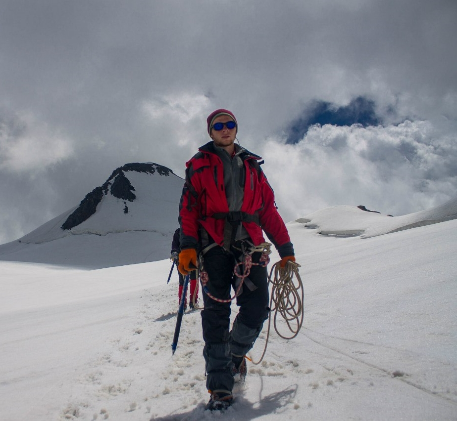

|  |
Andrii RiazanovI'm a fourth year PhD student in the Computer Science Department at Carnegie Mellon University, participating in Algorithms, Combinatorics, and Optimization program. I am fortunate to be advised by Venkatesan Guruswami. My research interests lie in theoretical computer science. My CV is available here. PublicationsLinear Programming Bounds for Almost-Balanced Binary Codes V. Guruswami, A. Riazanov. ISIT 2021. Linear Shannon Capacity of Cayley Graphs V. Guruswami, A. Riazanov. ISIT 2021. Arikan meets Shannon: Polar codes with near-optimal convergence to channel capacity V. Guruswami, A. Riazanov, M. Ye. STOC 2020. Beating Fredman-Komlós for perfect k-hashing V. Guruswami, A. Riazanov. ICALP 2019. Belief Propagation Min-Sum Algorithm for Generalized Min-Cost Network Flow A. Riazanov, Y. Maximov, M. Chertkov. ACC 2018. Exploring the bounds on the positive semidefinite rank A. Riazanov, M. Vyalyiy. manuscript, 2017. Inverse Protein Folding Problem via Quadratic Programming A. Riazanov, M. Karasikov, S. Grudinin. ITaS 2016.ContactOffice: GHC 9009 Email: riazanov@cs.cmu.edu |